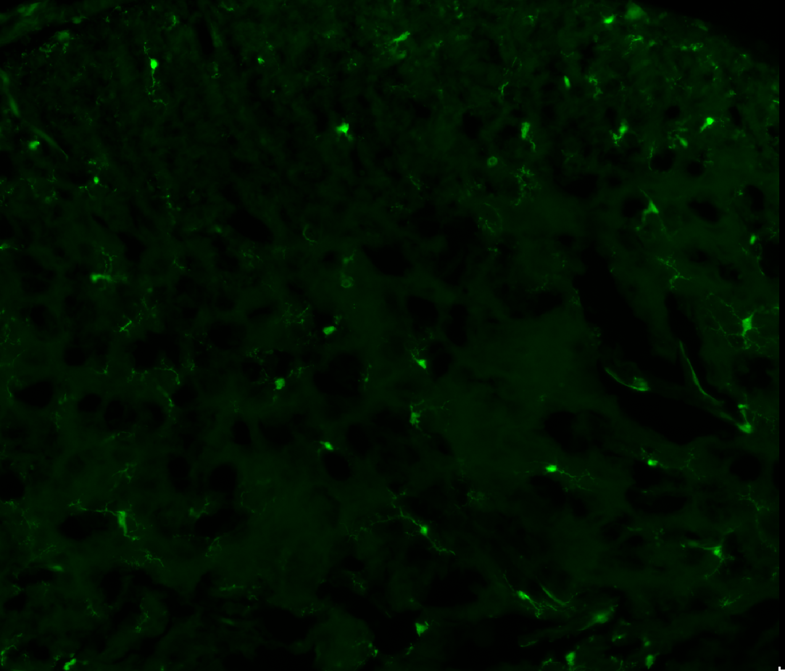
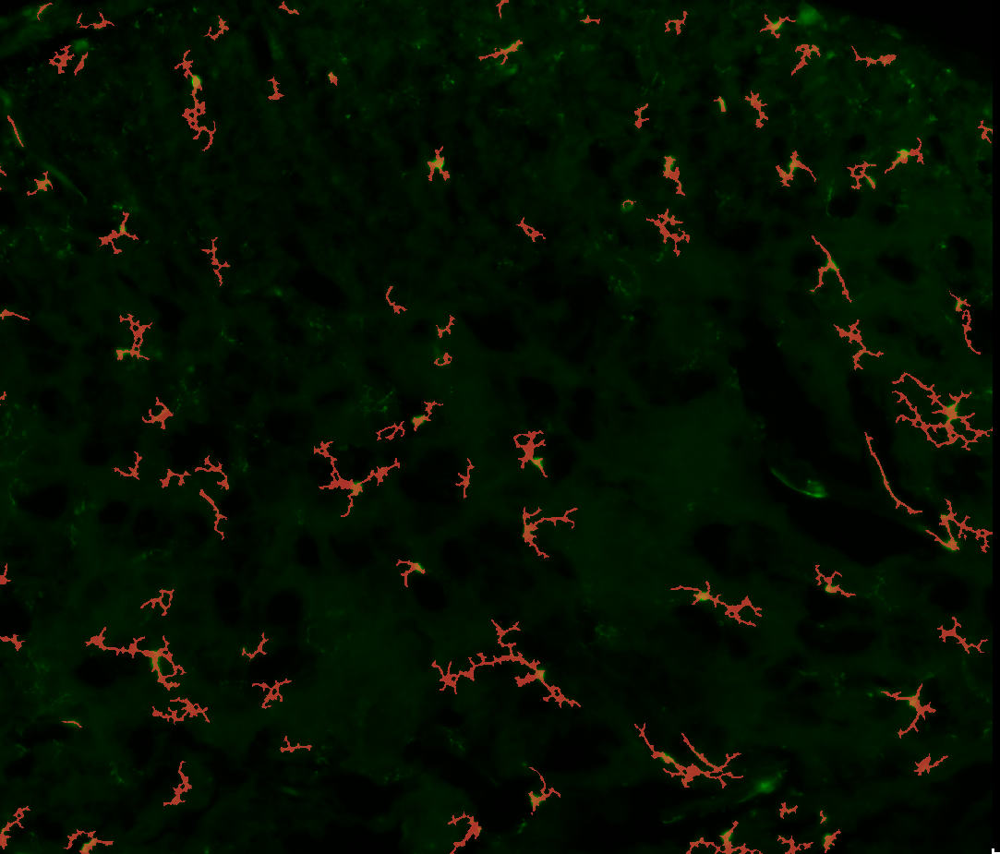
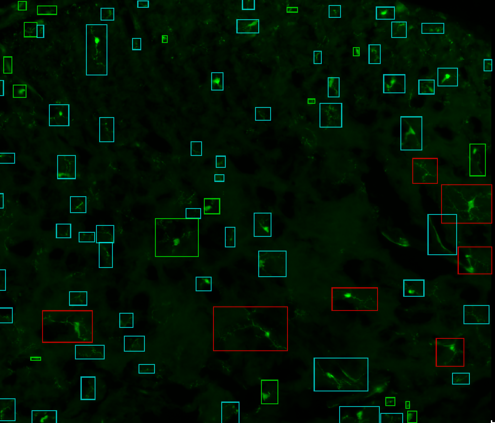

Annotate your data for YOLO and UNet2D
The goal of this widget is to help you annotate your data for both the YOLO and the UNet models.
- The YOLO architecture:
YOLO is a deep learning model that can detect objects.
Detections are composed of bounding-boxes around objects.
Each bounding-box will be given a class (amoeboid, intermediate, homeostatic or garbage).
- The UNet architecture:
UNet is a deep learning model that can segment images.
The output of the model is a probability map that must be thresholded to create a mask.
In our case, it is optimized to create shapes that are suitable for skeletonization.
To train the models, you need to provide a dataset of annotated images.
Annotations are either hand-drawn masks for the UNet or bounding-boxes for the YOLO.
The widget “Annotations helper” will help you to create this dataset.
|  |  |  |
Raw image |
Mask as produced by the UNet |
Bounding-boxes as produced by YOLO |
1. Prepare your data
First of all, the data that you will annotate must be correctly formatted.
Your images must all be the same size in pixels.
You can use TIF, PNG, JPG, … but no proprietary format (CZI, LIF, …).
You can use the “Tiles creator” widget to create patches from your images. A common size is 512x512 pixels.
All the images that you want to annotate must be in the same folder.
Before you start, you should have a folder structure like this:
📁 some-folder
├── 📁 my-experiment
│ ├── 14-25-23.336.tif
│ ├── 14-25-23.379.tif
│ ├── ...
│ └── 14-25-36.949.tif
2. Initialize the widget
Open the widget located in: Plugins > Microglia Analyzer > Annotations helper.
Click the
Root folderbutton and choose the folder named “some-folder” in the previous example. It is the parent folder of the folder containing your images.In the
Inputs sub-folderdropdown menu, choose the folder containing your images (named “my-experiment” in the previous example).The first image of your experiment will be displayed.
You can navigate through the images using the dropdown menu in the “Annotations management” section.
You can adjust the brightness and contrast of the image in the upper-left corner of Napari.
3. Create your classes
The first thing to do is to create new classes. Each one corresponds to a different type of object that you want to detect.
Simply fill the text field in the “Classes management” section and click the
New classbutton.A new layer should have appeared in the left column of Napari, named “class.xxx”, with “xxx” being the name of your class.
You can add as many classes as you want.
4. Annotate your data for YOLO
To annotate an object, you have to draw a bounding-box around it. You must limit yourself to rectangles. Do not use ellipses or polygons or anything else.
Choose the class for which you want to create annotations by clicking on its corresponding layer in the left column of Napari.
You can choose the rectangle tool in the upper-left section of Napari’s window.
Your boxes should contain the whole object and a few pixels around it.
It is not a problem if the boxes overlap.
If you failed to draw a box correctly, don’t edit it: delete it and draw a new one.
If you don’t plan to annotate many images, you should really be careful not to forget any object on your images.
When you are happy with the annotations you made, click the
Save annotationsbutton in the “Annotations management” section.In the “Classes management” section, a table should have appeared to show you global statistics about your annotations.
With the exception of your garbage class (if you have one), you should try to keep the number of annotations for each class balanced.
A new folder with the “-labels” suffix should have appeared in the root folder. It contains the annotations you made as TXT files.
A new file with the “-classes.txt” suffix should have appeared in the root folder. It contains the classes you created.
Your files architecture should now look like this:
📁 some-folder
├── 📁 my-experiment
│ ├── 14-25-23.336.tif
│ ├── 14-25-23.379.tif
│ ├── ...
│ └── 14-25-36.949.tif
├── 📁 my-experiment-labels
│ ├── 14-25-23.336.txt
│ ├── 14-25-23.379.txt
│ ├── ...
│ └── 14-25-36.949.txt
├── 📃 my-experiment-classes.txt
5. Annotate your data for UNet
To annotate objects for UNet, avoid doing sparse annotations on your images. Each mask must be the exact representation of the object.
For that, click on the
Add maskbutton in the “Masks” section.You just have to add it once, and it will automatically be added for all images.
Use the brush and the eraser tools in the upper-left section of Napari’s window to draw and erase your masks.
Once you are done, click the
Save masksbutton in the “Masks” section.The skeleton of your mask should appear, make sure that it is correct and doesn’t contain extra branches or holes. Otherwise, it is what your model will learn.
Your files architecture should now look like this:
📁 some-folder
├── 📁 my-experiment
│ ├── 14-25-23.336.tif
│ ├── 14-25-23.379.tif
│ ├── ...
│ └── 14-25-36.949.tif
├── 📁 my-experiment-labels
│ ├── 14-25-23.336.txt
│ ├── 14-25-23.379.txt
│ ├── ...
│ └── 14-25-36.949.txt
├── 📁 my-experiment-masks
│ ├── 14-25-23.336.tif
│ ├── 14-25-23.379.tif
│ ├── ...
│ └── 14-25-36.949.tif
├── 📃 my-experiment-classes.txt
Notes
If you are working on RGB images, they will be converted to gray scale.
If you already annotated some images, your annotations will be loaded when you open the widget.
- In the “.txt” files generated for each image by the widget, the content is as follows:
[integer]: the class index (starting from 0).
[float]: the x-coordinate of the center of the bounding-box, in percentage of the image width.
[float]: the y-coordinate of the center of the bounding-box, in percentage of the image height.
[float]: the width of the bounding-box, in percentage of the image width.
[float]: the height of the bounding-box, in percentage of the image height.